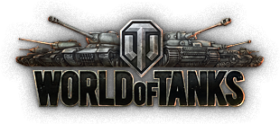

|  |
Goals...
1. Wrap up the Model loading. Need LODing to reduce render time.
2. Fix scaling of terrain textures!
O Map load screen.
P Enable model picking
-= Mouse Movement =-
A,D,W,S: Move X,Y.
Z:
Move View Center UP/DOWN.
Shift: Move View X,Z.
B: Show model bounding boxes.
E: Edit Shaders.
F: Freeze Frustum.
I : Show Terrain Ids.
N : Show normals.. Wire mode must be enabled.
O: Load map Screen.
P: Pick Mode On/Off.
T: Hide test terrain textures.
Space: Orbit Light On/Off.
+/-: Mini Map Scale.
1: Wire Models.
2: Wire Terrain.
F1 Show/Hide cursor.
F5 Show/Hide chunks.
F6 Show/Hide Play Field.
F7 Show Hide Paly Field Border .